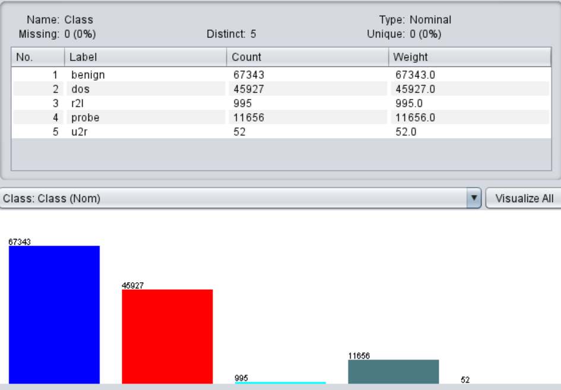
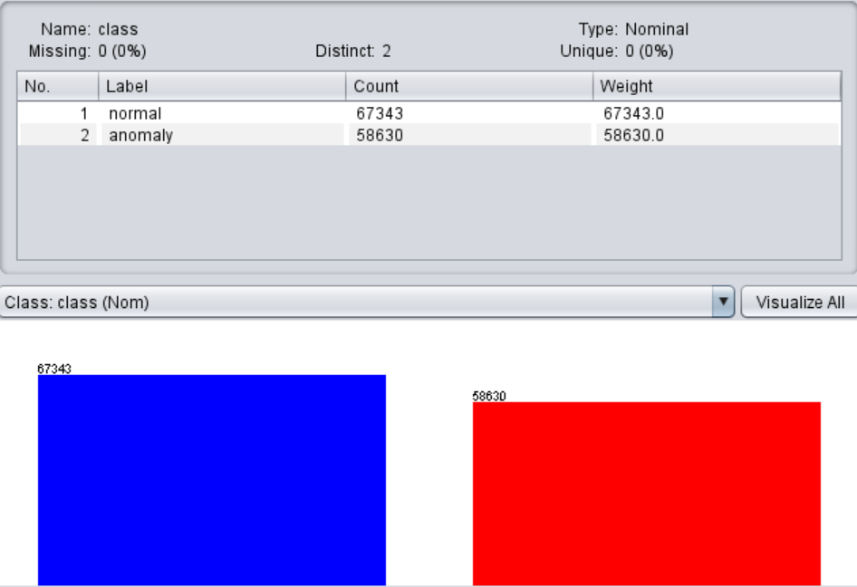
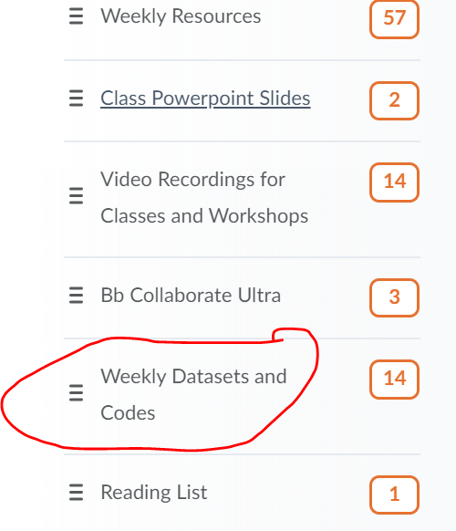

Here, we will explore how WEKA can identify attack classes for internet traffic network datasets. NSL-KDD dataset discussed in the last section will be used for experimental purposes. We have two versions of NSL-KDD datasets, discussed below:
In the 5-class NSL-KDD dataset, four attack types discussed in the previous section are present. The other class is the transactions related to the "normal" instances. Please see the following figure related to the class distribution.

In this modified dataset, all attack classes are merged into one as "anomaly" whereas the other is marked as "normal". See the figure below regarding the class distribution.

You can access the datasets (ready for WEKA) from the week 4 folder of the VM provided. Alternatively, you can download from
CloudDeakin > Resources > Weekly Datasets and Codes

Please see the following video on how WEKA can be used for the experiment purpose.